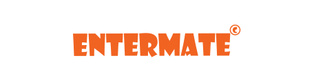
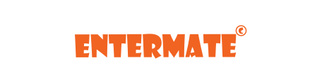

게임
TOAST를 이용하는 고객이 어떤 서비스를 이용해서 게임 서비스를 하고 있는지 확인하세요.
-

로드컴플릿 ‘크루세이더 퀘스트’ 글로벌 런칭
크루세이더 퀘스트는 2014년 11월 10일 출시하였으며 90년대 레트로풍의 그래픽, 독특한 게임플레이와 경쾌한 액션이 특징인 퍼즐액션 RPG게임입니다.
빠른 글로벌 런칭과 국가별 운영관리를 위해 ‘GameBase’를 이용하였으며 국가별 최고매출 순위 TOP 10에서 좋은 성과를 보여주고 있습니다. -
 

엔터메이트 글로벌 퍼블리셔
엔터메이트는 강력한 중화권 네트워크를 바탕으로 중국과 대만 내, 인기게임을 국내에 런칭하여 좋은 성과를 보여주고 있는 글로벌 퍼블리셔입니다.
안정적인 게임서비스와 비용절감을 위해 물리서버와 클라우드 서버를 혼합 구성한 Hybrid-cloud 를 이용하고 있으며,
외부에서의 앱 공격을 탐지하기 위해 앱 보안 솔루션도 이용하고 있습니다. -


시그널앤코
시그널앤코는 모바일게임 개발/퍼블리셔로서 삼국지 블랙라벨, 클랜앤컨퀘스트 등 다수의 모바일게임을 서비스하고 있습니다. 유연한 서비스 제공을 위해 TOAST Infra를 활용하고 있으며 게임에서 공통으로 필요한 기능을 통합 SDK로 제공하는 TOAST Gamebase를 연동하여 인증, IAP 서비스를 제공하고 있습니다.
이용서비스
-
Instance 안정적이고 합리적인 가격의 Instance를 활용하여 서버 구축
-
Gamebase 통합 SDK를 연동하여 인증, IAP 서비스 제공
-